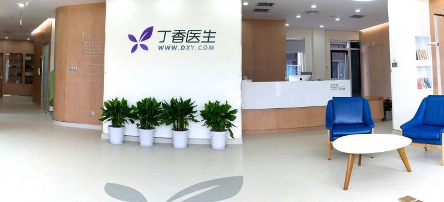

诊所故事返回上一页
积累了足够多的线上用户之后，丁香园也开始切入线下做诊所了
2016-07-14 雷锋网
如果不是因为牙齿崩坏去看了几个月的民营牙医，记者不会知道看医生居然可以这么如沐春风，简直让人拔了一颗还想再拔一颗。医生和护士会戴花帽子，以「消除医院给人的肃穆、冷冰冰的感觉」；还会讲冷笑话缓解病人紧张感。
为什么看医生的经历一定要伴随漫长的等待、在医生面前的小板凳上坐不到三分钟就被草草打发、在各个窗口前狼奔豕突，为什么就医不能体面、从容一点呢？在线上拥有千万级用户、业内美誉度颇高的丁香园也问了这个问题。为了解决这个问题，他们准备开自己的诊所。
为什么要办丁香诊所？
病人看病难是丁香诊所要解决的一个大问题，但不是唯一的问题。
「我自己曾经是医生，我在医院练就了三分钟看完一个病人的技能。必须要看完，因为诊室门外还有一百多号人在排队。」在上周的发布会上，丁香园的董事长李天天这样说道。
医生是一个投入期很长的职业，本应该是脑力劳动者，但实际上，现行的体制下医生需要付出很高强度的体力劳动才能获得体面的收入。「公立医院是社会基础设施的一部分，为了保证每个人都看得起医生，挂号费、诊疗费都被压得很低，医生的专业价值没有得到承认。」据李天天介绍，他周围的很多人学医完毕之后并没有成为一名医学工作者，纷纷转了行。这对于这些人自己、他们的家庭、社会都是一种浪费。
虽然诊疗费被压得很低，但医院也有营收压力，每个科室都有自己的 KPI ，医生必须在检测、药品上作文章。「我在医院的时候不仅是一个医生，也是一个会计。开药的时候除了拼医学知识，还要拼算术。」他想，能不能只做一个纯粹的医生？
丁香诊所是一个怎样的诊所？

-
儿科、全科，内科、外科、妇科、急诊等多个科室；11月初要开业的这家诊所面积大约在800平，15医生，20个护士。
-
采用线上、线下相结合的数字化运营模式：支持第三方远程诊断；
-
支持电子处方流转及第三方配送；
-
支持远程监护及慢病管理；
-
微信预约挂号、远程就诊、微信支付等。
丁香诊所把自己描述为「家庭医生诊所（family medicine clinics）和急症中心（urgent care centers）」，并不是高端诊所，而是基础医疗的一部分，替代的是社区医院的工作。
在民营医疗领域，牙科、美容科这种高 ARPU 值的专科已经被证明是可以良好运转的（光是牙科医院，叫得出名字的民营品牌就有不少），而丁香医生诊所这次却选择从全科切入。
「选择全科有三个原因。一，和大医院定位区分开来。实事求是地说，和大医院的正面竞争比较困难；二，医改最能撬动的也就是基层医疗服务，所以做社区型诊所的机会更大；三，政府鼓励基础医疗。当然专科也有机会，但我们的判断是全科的机会更大。」----李天天。
话虽如此，已经有不少人替他们算过账了，算的结果，「装修租金医疗设备采购的硬件成本＋医护人员的人力成本」VS「每个患者 300-500 左右（丁香诊所的负责人给出的也是这个数字）的诊金×一家 800 平的诊所一天顶峰能接待的患者数是 300 个」，似乎是入不敷出的样子。
「你那是算餐厅账的办法，吃完饭，买单走人，一笔交易一笔账。我们这里除了看得见的患者上门诊疗服务，还有很多综合医疗服务：咨询、慢性病管理、远程医疗和在线医疗等等，包括和保险公司的合作，未来可能还有上门服务。」丁香诊所的负责人杨泽方没有透露更详细的运营情况——事实上现在诊所还未正式开业，也没有运营数字可以分享——只是举例说他们福州的儿科医院（可以视为丁香诊所的雏形）第一个月就已经开始盈利了，「盈利不是什么问题，如果你一定一个要得到‘什么时候达到盈亏平衡‘的答案，我估计是几个月内。」
丁香诊所收取比公立医院更高的诊金，把药方、监测都开放给了上海医药、杭州迪安和金域诊疗等等合作伙伴，自己不配送药品，不作生理生化检测、心电方面的监测。这样一来，诊所省去了药品的仓储管理和大型医疗设备采购的成本；另一方面，医生也失去了开更多药、让病患做不必要检查的动机。综合起来，对病患而言就医的总成本是下降的。
记者的理解，丁香诊所致力于一件事：最大化地实现医生本身的专业价值，其他对这个帮助不大的项目尽量「外包」出去。
未来
丁香诊所摸索出一套可复制的培训体系、服务标准之后，就会向其他城市扩张。早期以自建诊所为主，以控制质量和流程；后期不排除会考虑加盟、联营的方式。据悉，目前有 36 个城市在他们的扩张计划上。
作者：林藠头，文章来源：雷锋网
如若转载，请注明出处：http://www.leiphone.com/news/201511/jpSm2zLbSB1ATQqu.html
- 微信自助预约
- 高效就诊流程
- 诊后微信随访
杭州市滨江区滨盛路口 2313 号 (长河路滨盛路口)
T: 0571-86687392
E: dxzs01@dxy.cn